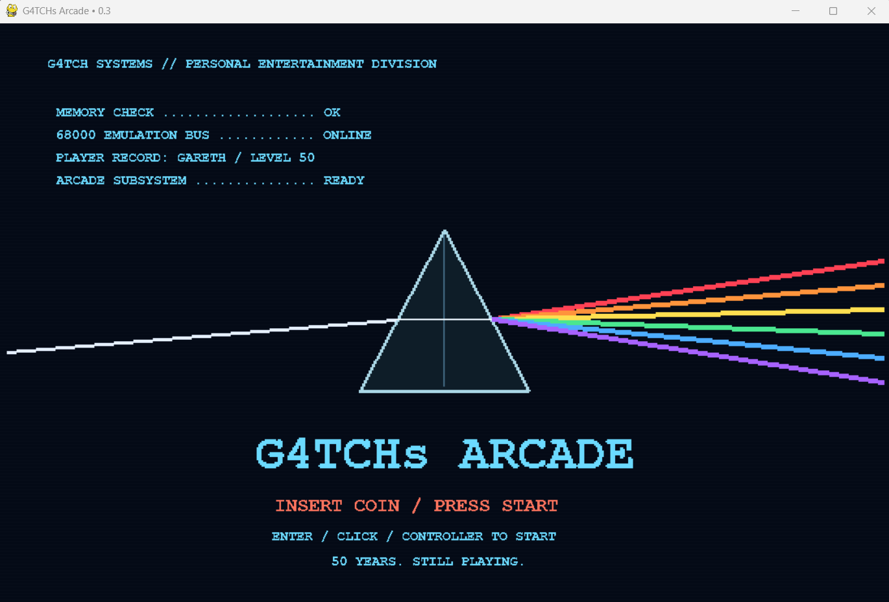
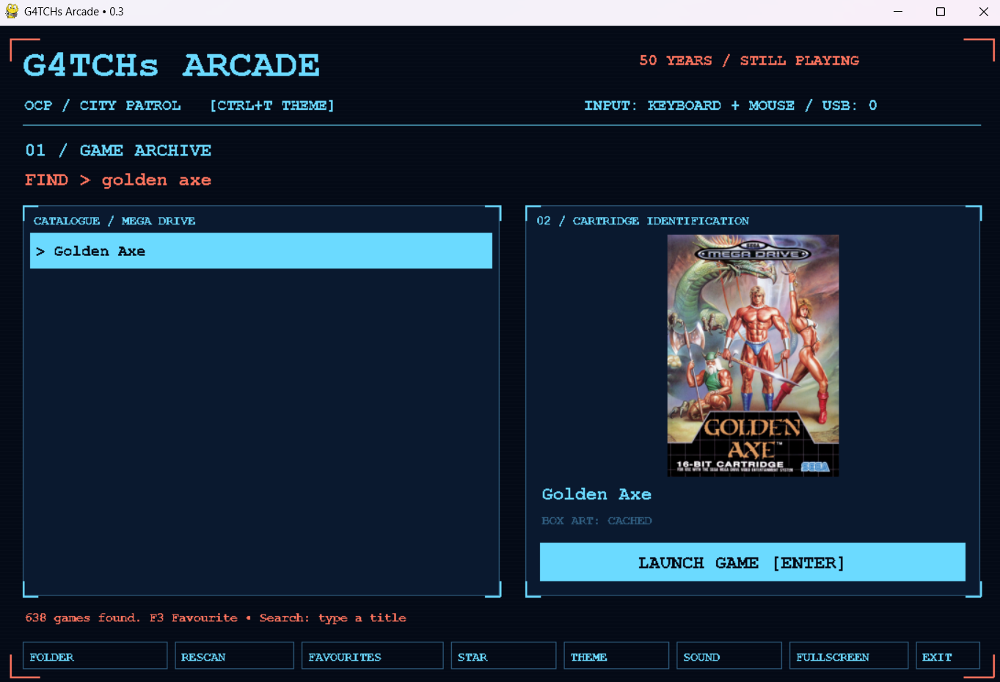
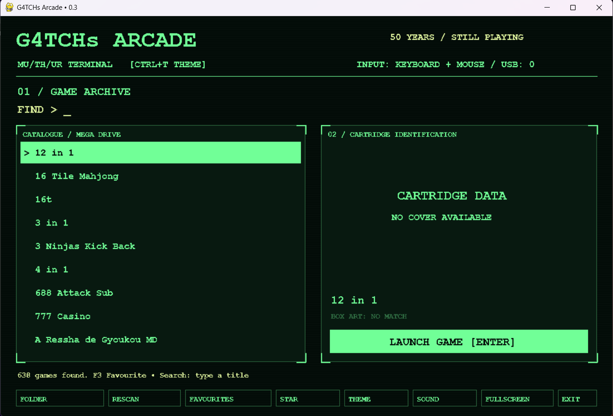
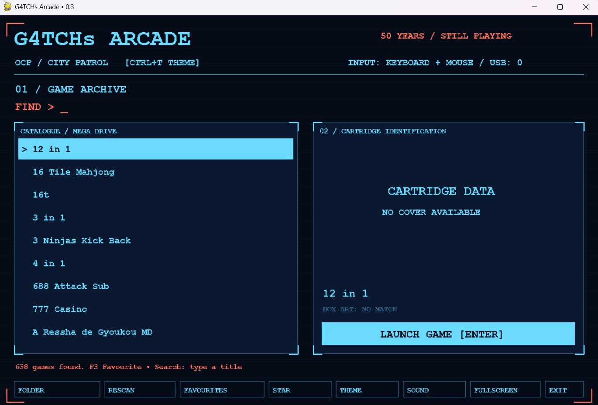

G4TCH’s ARCADE
50 years. Still playing.
A miniature arcade cabinet for my dad’s 50th birthday: the Mega Drive games he loves, a screen full of sci-fi personality, and a machine made especially for him.
Try the browser preview ↓
A birthday present with its own identity
The project started with a simple idea: build my dad a small arcade cabinet for his 50th birthday in December. His favourite games include Golden Axe, Double Dragon, Street Fighter and Ghouls ’n Ghosts. I wanted a dedicated machine that feels inviting to turn on, browse and play.
“G4TCH’s ARCADE” gives the build his own name and identity. The intention is a desktop-sized cabinet rather than a full-size machine, with a Raspberry Pi doing the work inside a custom case.
The software has moved beyond the initial idea. I have a working desktop prototype with a searchable game library and a launch interface. Golden Axe has been one of the early tests, and the latest screenshots show its cover art appearing alongside the matching search result.

Two ways to enter the game archive
The interface borrows its atmosphere from two of my dad’s favourite sci-fi worlds. The green theme leans towards the computer terminals of Alien: dark screens, restrained lines and readable text. The blue theme takes its cues from RoboCop’s HUD, with a sharper patrol-system feel.
Both themes keep the same practical layout: a search field, the catalogue on the left, and a cartridge panel on the right. Cover art is a useful extra when it is available; the screenshot of the unfiltered catalogue shows the fallback panel for a game without an image. The library should remain usable in either case.


Try the cabinet
Press Start, switch between the green and blue themes, and launch Prism Break , a small original paddle game included for testing the controls.
Use ← → or A / D to move, Space to launch and P to pause. On a phone, drag the paddle or use the buttons. A supported connected controller can also operate the preview.
For Mega Drive playback, choose Add ROMs and select an individual game file: .bin, .md, .gen, .smd or a single-game .zip. The first launch downloads the browser emulator; the cartridge stays in your browser.
This is a browser adaptation of the cabinet concept. The screenshots above show the separate native Pygame prototype. Original game ROMs are not bundled with this page.
Open a larger preview ↗Less wiring, more time on the cabinet
My current control idea is to use a preassembled USB arcade joystick and button unit. It would plug into the Pi, with its electronics and USB cable hidden inside the cabinet. That could simplify the build compared with wiring every button and joystick switch individually.
The controller still needs to suit the Pi’s operating system and the software’s input mapping. Its physical dimensions will also affect where the buttons, stick and mounting points can go. Those checks need to happen before committing to the case layout.
Morgan would like to help with the project by printing the casing, much like the work on the Pi-Boy enclosure. The compact Arcade Machine design by David C on Printables ↗ is a reference for the direction. It is inspiration for the enclosure, with the final shape dependent on the display, controller, Pi, ventilation and access to the ports.
The desktop library, game search, themes, prism splash and game launching.
Confirm the screen and USB controls, then work with Morgan on the printed case and mounting.
Refine input mappings, artwork and boot behaviour as the machine moves onto its intended hardware.
Mega Drive memories, organised as a library
For my local collection I used the TOSEC Sega Megadrive and Genesis collection on the Internet Archive ↗ . The front end makes it possible to search that collection rather than work through a long list of filenames every time.
The collection, the interface and the emulation layer each have a different job. The screenshots document my native game library; the small web version uses EmulatorJS for user-selected Mega Drive cartridges and includes its own original test game so visitors can try the cabinet immediately.